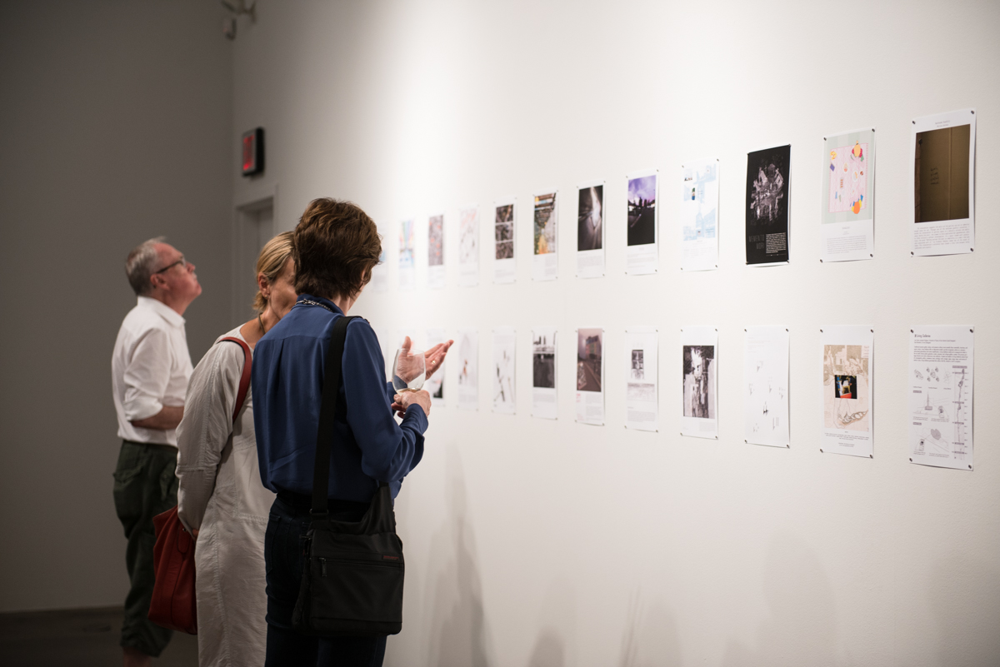
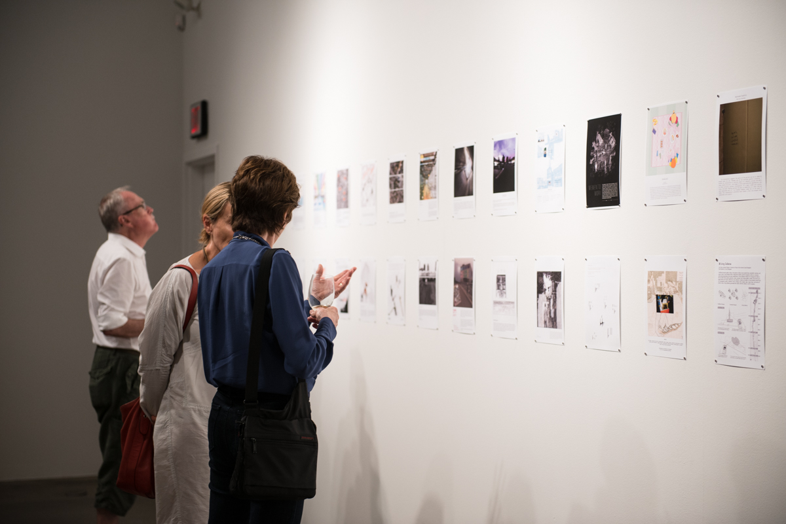

Frames: Whither the Contemporary Art Museum?
2014
The idea was selected from a call for ideas from The Museum of Contemporary Canadian Art’s (MOCCA). This call challenged architects to destroy existing paradigms about art galleries in order to re-conceive of them and imagine the museums and galleries of the future. I visualized my concept with the poster named 'Frames' with my conceptual statement about the future of contemporary art museum is : "Art gallery is all about frame. You want contents, please go to library. The archi- tectural form of a museum is becoming less and less important, all we need is frame, which can be physical, digital, even psychological. We are getting blinder when we see more, and art gallery helps us recognize the beauty of life by sharing the frames. Everyone is part of a frame, and part of the art being framed. That’s the attitude to art in modern life, art is what you see, art is you." This concept was selected as one of 69 ideas out of the over 130 that were submitted and was on view in The Museum of Contemporary Canadian Art’s (MOCCA) in 2014.
Selected Press
Info
Time: 09/2014, 1 Day (Concept sketch)
Exhibition: To be Destroyed
Location: Museum of Contemporary Canadian Art, Toronto, Canada
Photo source: Su-Ying Lee, Assistant Curator, Museum of Contemporary Canadian Art.
Category
Research
Future of Things

 
